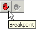
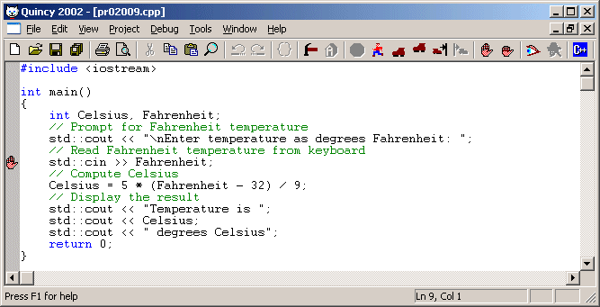
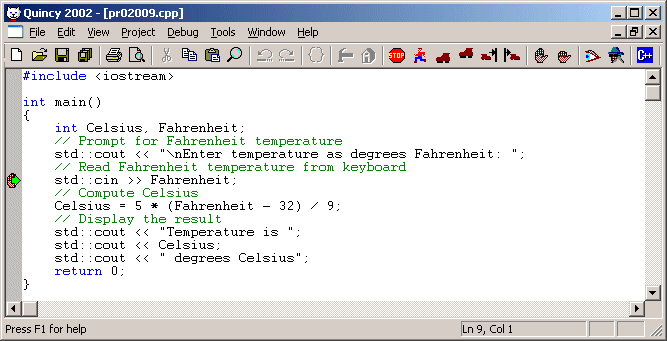
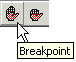
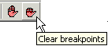

Breakpoints are lines of code where you want to stop during a debug run to observe the progress of the program. This operation is similar to stepping to the cursor location except that you can set multiple breakpoints, and they persist throughout the program's execution until you reset them.

Here is a breakpoint set in a program.

The hand icon in the left margin of the source code line indicates that a breakpoint is set. You can set multiple breakpoints in a program across several source code files.
When you run the program, Quincy interrupts execution when the program arrives at a source code line that has a breakpoint. The green arrow icon displays on top of the breakpoint hand icon in the left margin as shown here.

You can examine and modify variables, set watch variables, and then step or continue running from the breakpoint statement.

